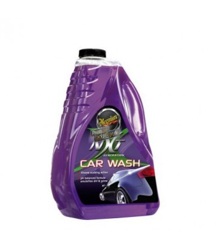
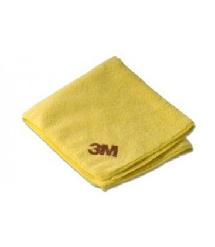
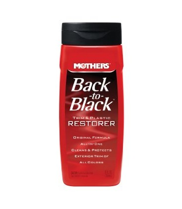
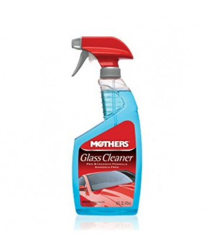
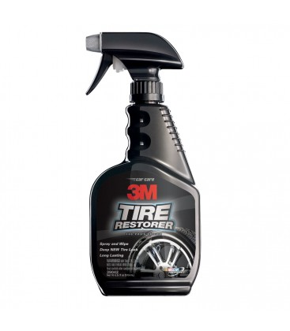

Productos para el exterior de tu Auto
Champú NXT Meguiars

El Champú NXT de Meguiars esta formulado con tecnología de punta que incorpora toda la sabiduría en polímetros sintéticos. Este Champú contiene agentes y aceites acondicionadores que se desarrollaron científicamente con el objetivo de encapsular y levantar la suciedad mas difícil, lubricando y evitando que las partículas contaminantes causen marcas o arañazos en la pintura durante el lavado

Paño De Microfibra (Marca 3M)
El Paño para Detallado de automóvil 39016 incorpora la distinguida tecnología de microfibra de 3M. Esta innovación que hace que el paño sea suave, no deje rasguños ni pelusa sobre las superficies. Rápida y completamente remueve residuos aceitosos y películas incluyendo cera, pulidores, esmaltes y huellas dactilares.
Adecuado para pintura, cromo, vidrio, plástico, vinilo, cuero, tableros, superficies pintadas y más.
Paño para detallado de automóvil
Seguro en pinturas claras

Back To Black Limpiador Y Restaurador De Partes Plásticas
Back to Black de Mothers brinda protección y limpieza a las partes plásticas exterior de tu auto para devolver ese brillo de un auto nuevo, dando un acabado natural. Ideal para remover suciedad,oxidación y cera seca.

Limpiador De Vidrio Glass Cleaner
Con el Limpiador de Vidrio Glass Cleaner de Mothers ni los residuos de la carretera ni la grasa, ni suciedad tienen posibilidad. Es seguro para usarse en todos los vidrios de tu auto..

Restaurador De Llantas 3M
El Restaurador de Llantas Tire Restorer de 3M, restaura la apariencia original de los cauchos, parachoques y otras piezas plásticas o de goma.